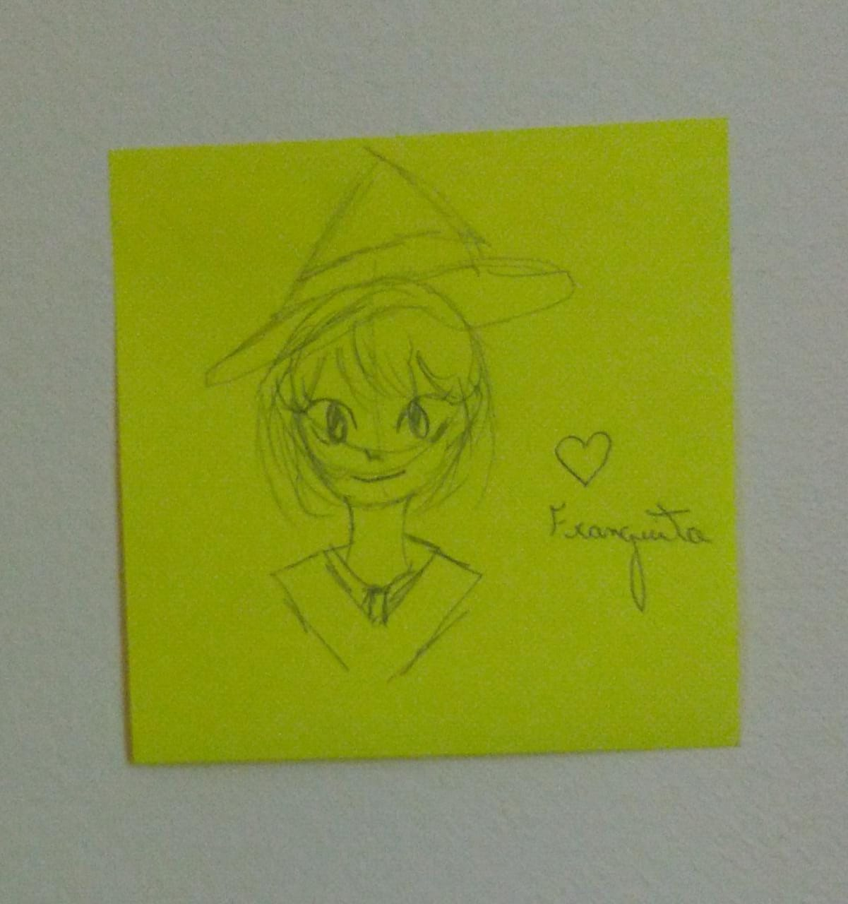

Arte?
Já ouviu aquele ditado: "Pessoas com gostos artísticos peculiares são artistas"? Não? Nem eu, mas na minha opinião isso é a mais pura verdade. Franguito tem muita arte exalando de dentro dela, ela é uma ótima fotógrafa e desenhista. Veja você mesmo.
Desenhos
Duas personagens que eu adoro: Akko Kagari e Rei Ayanami. Ela desenhou uma versão das duas juntas e eu colei na minha parede com todo o carinho do universo!
As vezes ela adora passar seu tempo fazendo uns esboços, na maioria das vezes são meninas com seus estilos casuais e peculiares. E esses são os resultados (clique para ver melhor):
Fotografias
São muitas as fotografias tirada por ela, toda hora que a gente ta passeando ela para pra tirar uma foto de algo. Se eu fosse colocar todas aqui não iria caber, então fique com algumas amostras (clique para ver melhor):
Edits
Edição de imagem de vídeo também é uma das paixões dela, é sempre algo bem conceitual e belo. Ela tem várias inspirações por aí, o que resulta em uma refinação de suas obras, creio eu.